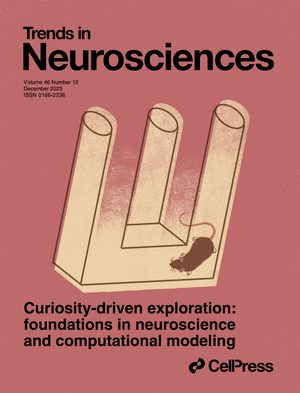
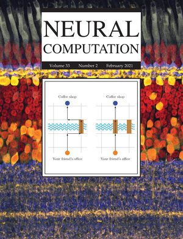
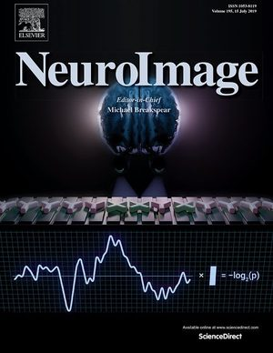

Publications
Full list also available on Google Scholar.
Key Publications
- Unifying goal-conditioned RL and unsupervised skill learning via control-maximization arXiv preprint
- An integrative framework for the human sense of control PsyArXiv preprint
- Novelty as a drive of human exploration in complex stochastic environments Proceedings of the National Academy of Sciences (PNAS) (2025)
- Surprise and novelty in the brain Current Opinion in Neurobiology (2023)
- Curiosity-driven exploration: foundations in neuroscience and computational modeling Trends in Neurosciences (2023)
- A taxonomy of surprise definitions Journal of Mathematical Psychology (2022)
Preprints
- Unifying goal-conditioned RL and unsupervised skill learning via control-maximization arXiv preprint
- An integrative framework for the human sense of control PsyArXiv preprint
- A compositional model of semantic fluency PsyArXiv preprint
- Meta-learning as a principle for human-like visual representations arXiv preprint
- Post-training makes large language models less human-like arXiv preprint
- Remembering the "When": Hebbian memory models for the time of past events bioRxiv preprint
2026
- Representational similarity modulates neural and behavioral signatures of novelty Neuron (2026) Talk · Preview
- Learning is a fundamental source of behavioral individuality eLife (2026)
2025
- Novelty as a drive of human exploration in complex stochastic environments Proceedings of the National Academy of Sciences (PNAS) (2025) Talk
- A foundation model to predict and capture human cognition Nature (2025) Talk
- Merits of curiosity: a simulation study Open Mind (2025)
2024
- Seeking the new, learning from the unexpected: Computational models of surprise and novelty in the brain Ph.D. Thesis, EPFL (2024) News · Dimitris N. Chorafas Foundation Award · EDIC Thesis Distinction Award
- Computational models of intrinsic motivation for curiosity and creativity Behavioral and Brain Sciences (2024)
- Distributed and specific encoding of sensory, motor, and decision information in the mouse neocortex during goal-directed behavior Cell Reports (2024)
2023
-

Curiosity-driven exploration: foundations in neuroscience and computational modeling Trends in Neurosciences (2023) - Surprise and novelty in the brain Current Opinion in Neurobiology (2023)
2022
- A taxonomy of surprise definitions Journal of Mathematical Psychology (2022) Talk
- Brain signals of a Surprise-Actor-Critic model: evidence for multiple learning modules in human decision making NeuroImage (2022)
2021
- Novelty is not Surprise: human exploratory and adaptive behavior in sequential decision-making PLOS Computational Biology (2021) Talk (Bernstein 2021) · Talk (EPFL Neuro Symposium 2021)
-

Learning in volatile environments with the Bayes Factor Surprise Neural Computation (2021) - Fitting summary statistics of neural data with a differentiable spiking network simulator Advances in Neural Information Processing Systems (NeurIPS) (2021) Talk
- Rapid suppression and sustained activation of distinct cortical regions for a delayed sensory-triggered motor response Neuron (2021)
Before 2020
-

- Election vote share prediction using a sentiment-based fusion of Twitter data with Google Trends and online polls Proceedings of the 6th International Conference on Data Science, Technology and Applications (2017)
* Equal contribution. † Equal senior contribution.